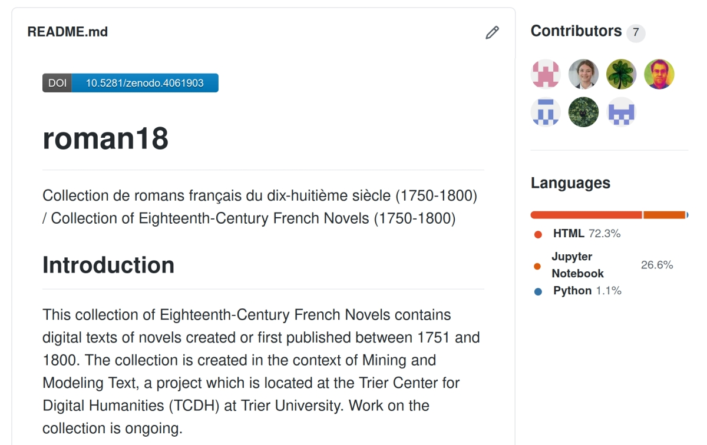
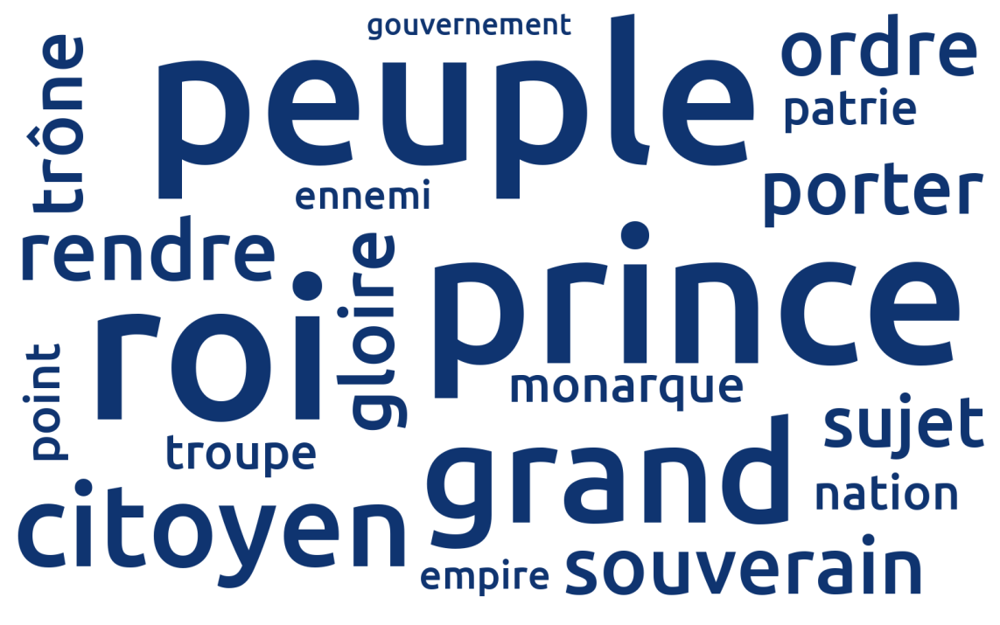
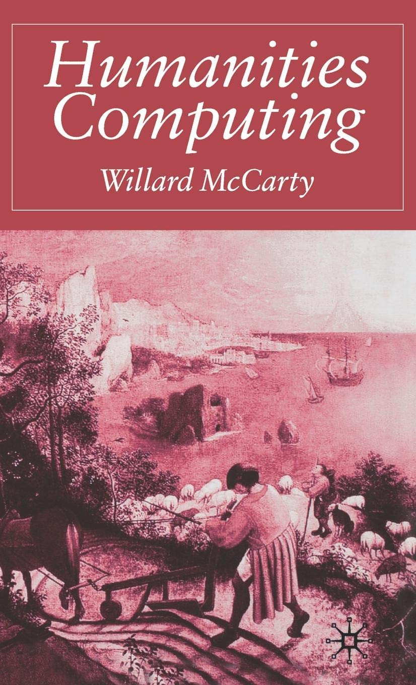
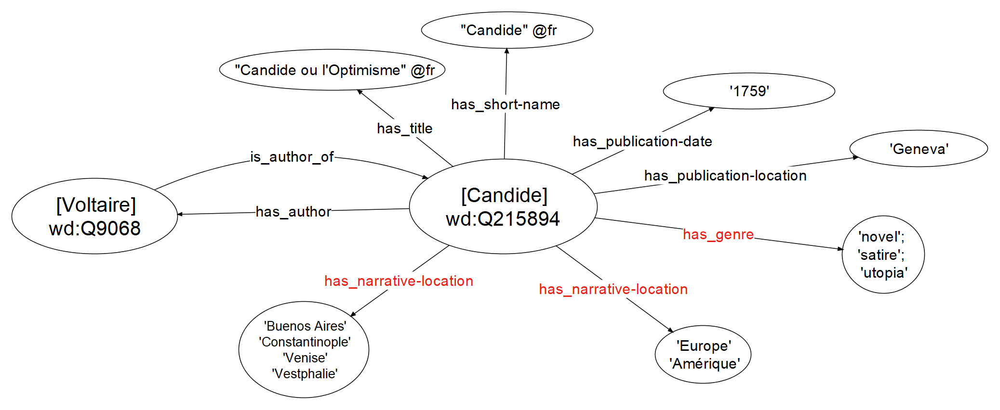
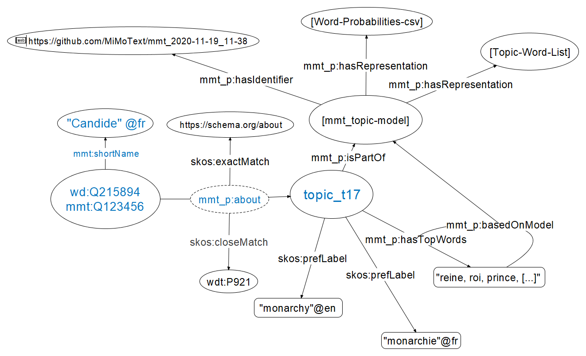
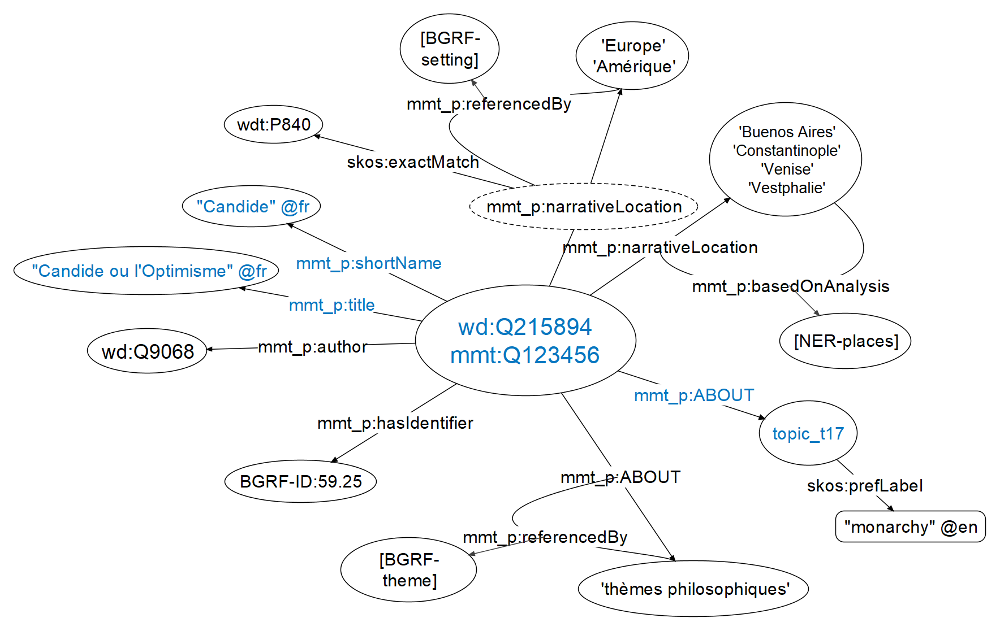
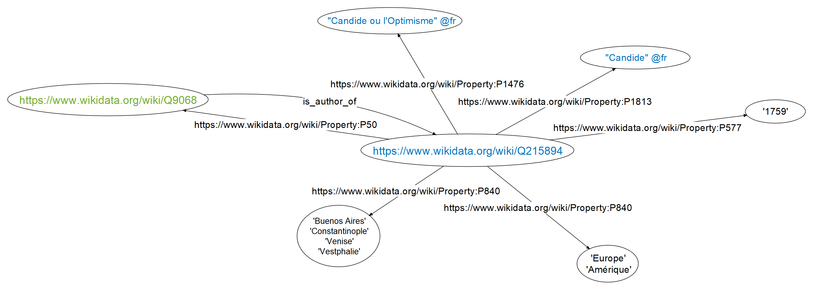

# Erheben, Sammeln und Vernetzen von Metadaten: Praxisbeispiel MiMoText <img height="60" data-src="img/basics/mimotext-logo.png"> <br/> <hr/> <p>Christof Schöch & Maria Hinzmann, mit Beiträgen von Andreas Lüschow, Julia Röttgermann, Katharina Dietz und Anne Klee</p> <p><a href="https://mimotext.github.io/fid-romanistik2020">https://mimotext.github.io/fid-romanistik2020</a></p> <p><strong><emph>Datensicherung im Forschungsprozess</emph> | Online-Workshop | 27.11.2020</strong></p> <hr/> <img height="50" data-src="img/basics/uni-trier.png"> :: - Bericht aus laufendem Projekt am TCDH der Universität Trier - Kollaboratives Projekt mit Beiträgen aus CL, Informatik, DH und LitWiss - work in progress: alles in ständiger Bewegung - Gefördert durch die Forschungsinitiative Rheinland-Pfalz -- ## Gliederung 1. [Einführung in 'Mining and Modeling Text'](#/2) 2. [Mining - Erheben und Sammeln von Metadaten](#/3) 3. [Modeling - Vernetzung von Metadaten](#/4) 4. [Fazit - retrospektiv und prospektiv](#/5) :: - Kurzer Überblick über das Projekt - Mining: Wie ermitteln wir Informationen/Metadaten aus Text? - Modeling: Repräsentation als Voraussetzung für Vernetzung - Mining und Modeling nicht getrennt zu denken! (Kreis, nicht Linie); Vortragschronologie entspricht keiner Chronologie des Forschungsprozesses; alle Teilprojekte greifen in ständigem 'work in progress' ineinander - Weitergehende Motivation: erproben hier an älterer Literatur; Wünsche für die Zukunft des wiss. Publizierens. -- ## (1) Einführung in <br/>'Mining and Modeling Text' --- ### MiMoText: Überblick <a href="img/mimotext-overview.png"><img height="450" data-src="img/mimotext-overview.png"></a> <br/><a href="https://mimotext.uni-trier.de">https://mimotext.uni-trier.de</a> :: - Gegenstand: französischer Roman des 18. Jahrhunderts - Drei Informationsquellen: -> alle lassen sich als Metadaten auffassen mit einem weiten/erweiterten 'Metadaten'-Begriff (vgl. nächste Folie) - (A) Metadaten aus Nachweissystemen (Bibliographie du genre romanesque français); - (B) Sachinformationen aus Fachliteratur (Literaturgeschichten); - (C) Texteigenschaften aus Primärtexten (Volltexte der Romane) - Ziel: Informationen extrahieren (=> Metadaten i.e.S & i.w.S. erheben/sammeln), als LOD modellieren und zusammenführen (=> vernetzen) --- ### Was sind (literaturhistorisch) relevante Metadaten? * Nachweissysteme (Metadaten i.e.S.) <!-- .element: class="fragment" data-fragment-index="1" --> * Metadaten: Autoren, Werke, Verlage, etc. * Keywords in der *Bibliographie...*: Setting, Themen, Protagonisten <br/><br/> * Primärtexte (Metadaten i.w.S.) <!-- .element: class="fragment" data-fragment-index="2" --> * Handlungsorte * Figurennamen * Topics * Anteil direkter Rede * uvm. <br/><br/> * Fachliteratur (Metadaten i.w.S.) <!-- .element: class="fragment" data-fragment-index="3" --> * Handlung, Inhalte, Themen * Wertungen von Autor:innen und Werken * Beziehungen zwischen Autor:innen und Werken :: - Bezogen auf die drei Säulen des Projekts - Vorschlag der Unterscheidung von Metadaten i.e.S./i.w.S. - Austausch mit / Diskussion in fachwissenschaftlicher Community (Relevanzdiskussion etc.) - Handlungsorte = Setting; Figurennamen = Protagonisten; Topics = Themen --- ### Modellierungsansatz: Linked Open Data <img height="400" data-src="img/rdf11-primer-example-graph.jpg"> Quelle: <br/><a href="https://www.w3.org/TR/rdf11-primer/">https://www.w3.org/TR/rdf11-primer/</a> :: - [LOD und Tripel-Grundstruktur hier schon einmal einführen, da teilweise auch im 2. Teil sich darauf bezogen wird; ggf. Verweis, dass dann im 3. Teil genauer] --- ### Modellierung als Linked Open Data (LOD) * Linked Open Data <!-- .element: class="fragment" data-fragment-index="1" --> * große Menge einfacher Aussagen * Subjekt, Prädikat, Objekt (Tripel) * Aussagen-Beispiele <!-- .element: class="fragment" data-fragment-index="2" --> * Voltaire (Q9068) AUTHOR_OF Candide (Q215894) * Candide PUBLICATION_DATE 1759 * Candide PUBLICATION_LOCATION Geneva (tgn:7007279) :: - LOD-Paradigma als leitend; Knackpunkt: zugrundeliegende Ontologie - Vor allem: Inventar an Aussagetypen; hier bewusst erstmal "einfache Metadaten", für die es kein Einverständnis oder Konsensbildung in einer community braucht -- ## (2) Mining - <br/>Erheben und Sammeln von Metadaten --- ### Beispiel 1: Bibliographie du genre romanesque français <a href="img/bgrf-Candide.png"><img height="400" src="img/bgrf-Candide.png"></img></a> <p>Martin / Mylne / Frautschi: <em>Bibliographie<br/> du genre romanesque français, 1751-1800</em>, 1977</p> :: - Ein Eintrag unter rund 2500: Voltaires Candide; - Candide dient als "roter Faden" im Vortrag (neben den 3 Säulen) - die drei Säulen der verschiedenen Informationsquellen sind strukturgebend; jeweils ein Beispiel --- #### Welche Metadaten enthält diese Bibliographie? * zusammenfassende Statistik <!-- .element: class="fragment" data-fragment-index="1" --> * ~1100 verschiedene Autor:innen * ~2600 Einträge (Romane) * ~58.000 Triples (ca. 22 pro Roman) * weitere Informationen <!-- .element: class="fragment" data-fragment-index="2" --> * ~720 Romane in der 1. Person * ~920 in 3. Person * 2210 Einträge mit Angaben zum Inhalt :: - Bibliographie ist Referenzpunkt für das Projekt - An Werke und Autoren werden nun weitere Informationen (=>Metadaten i.w.S.) "angehängt" [Statistik-Einschränkungen: Herausforderungen der maschinellen Aufbereitung; "Romane 1./3.Person" im weiteren Sinne und die Komplexität verschiedener Zwischenformen vereinfachend] --- ### Beispiel 2: Primärliteratur (Romane) * Pilotkorpus: 90 französische Romane (1750-1800) <!-- .element: class="fragment" data-fragment-index="1" --> * Kodierung: in XML-TEI, mit Metadaten, nach ELTeC-Schema <!-- .element: class="fragment" data-fragment-index="2" --> * Analyse: Topic Modeling zur Identifikation von Themen <!-- .element: class="fragment" data-fragment-index="3" --> :: - neben Topic Modeling weitere Analyseverfahren zur Generierung von Metadaten (ggf. Rückverweis "Was sind relevante Metadaten?"; "Was sind überhaupt literaturwissenschaftlich relevante Analyse- und Interpretationsmethoden"?) --- #### Das "roman18"-Korpus </img> <br/><p>Collection de romans français du dix-huitième siècle (1750-1800) /<br/>Collection of Eighteenth-Century French Novels (1750-1800)</p> :: - im Sinne der FAIR-Prinzipien: auf Zenodo mit einem DOI für Persistenz (regelmäßige releases); fortlaufend Aktualisierungen auf Github --- #### Topic Modeling - Erste Ergebnisse <a href="img/pilot_mod200_fr_10_500_expStop.html"><img height="500" src="img/pyldavis.png"></img></a> :: - Einige Topics: Familie, Philosophie, Liebe, Monarchie, Sexualität, Lesen/Schreiben, Tod, etc. - Festhalten, welche der Topics jeweils in bestimmten Romanen am wichtigsten sind [- Beispielsweise: In Candide hat das Topic "philsosphy" die Wahrscheinlichkeit 0.34 (zweit-wichtigster Topic)] --- #### Zwei "major topics" <br/> "monarchy" "love" <br/></img> <img height="250" src="img/topic_009.png"></img> --- #### Abgeleitete Aussagen ('statements') * Candide IS_ABOUT "monarchie" * Clarice IS_ABOUT "amour" :: - einfache, erstmal oberflächliche statements - Topics sind ein Weg, das Themen zu definieren, also wovon ein Werk handelt; "what it IS_ABOUT" - hervorzuheben: die Labels kommen aus einem kontrollierten Vokabular; [- Topics have a precise probability (and probability rank) in each novel; Topics depend on the specific topic model - Models depend on a specific version of our corpus, and parameters - To create some transparency, we indicate the top words of each topic] --- ### Beispiel 3: Sekundärliteratur (literaturwiss. Fachtexte) 3 Elemente für Extraktion von Aussagen aus Sekundärliteratur: * Annotationsguidelines (basierend auf Datenmodell) <!-- .element: class="fragment" data-fragment-index="1" --> * manuelle Annotation: Generierung von Traingsdaten (in INCEpTION) <!-- .element: class="fragment" data-fragment-index="2" --> * Training: Machine Learning (in Python) <!-- .element: class="fragment" data-fragment-index="3" --> :: - 1 & 2. nicht in der klaren Reihenfolge, daher "Elemente", nicht Schritte :); [nicht Mining zuerst, aber auch nicht Modeling] [- evtl. überleitung Einordnung "unsupervised" bei Topic Modeling gegenüber "supervised" für Seklit.] --- #### Annotationen auf 'Named Entity'-Layer <a href="img/inception_Candide-disambiguation.png"><img height="350" src="img/inception_Candide-disambiguation.png"></img></a> * Annotationen von Autoren und Werken (Entitäten -> Subjekt-/ObjektPosition in Aussagen) * Disambiguierung von Entitäten über Knowledgebase-Anbindung (hier: Wikidata) :: --- #### Annotation auf 'Predicate'/Relation-Layer <a href="img/inception_genre.png"><img height="300" src="img/inception_genre.png"></img></a> * "hasGenre" als Property bzw. Prädikat * Subjekt verknüpft mit Wikidata-Identifier für "Bélisaire" (Q5005038) * Objekt verknüpft mit Wikidata-Identifier für "novel" (Q8261) :: - Identifier-Verknüpfung analog zu Disambiguierungs-Beispiel von Candide (daher hier gekürzt) - Tripel-Struktur-Reihenfolge muss nicht mit String-Reihenfolge im zu annotierenden Satz übereinstimmen [- Trainingsdaten -> Machine Learning in Python (s.o.)] [- Hintergrundinfo: Wikidata-Identifier: genre Q483394; ist ein Q-Identifier, kein P-Identifier] [- Ebenso für "literary genre": https://www.wikidata.org/wiki/Q223393] -- ## (3) Modellierung - Vernetzung von Metadaten --- #### Jannidis & Flanders, *The Shape of Data in DH*, 2019 <img height="250" data-src="img/flanders-jannidis.jpg"> >"The term 'data modeling' in computer science is most typically used in a fairly restrictive sense for the modeling of relational databases, while the digital humanities has a more general understanding of the term: data modeling is the modeling of some segment of the world in such a way to make some aspects computable." --- #### Willard McCarty, *Humanities Computing*, 2005  > "recursive modeling": </br> Modellierung als ein iterativer Prozess --- #### Aussagen in Tripel-Struktur <a href="img/KG_Bsp-ohne-ID_261120.png"></img></a> :: - Candide als Beispiel; Aussagen aus den drei Informationsquellen im Folgenden darauf bezogen - wieder Beispiele für jede Informationsquelle bzw. jede der drei Säulen unterschiedlicher Metadaten --- #### Säule 1: Bibliographie als RDF <a href="img/bgrf-Diderot-RDF.png"><img height="500" src="img/bgrf-Diderot-RDF.png"></img></a> :: - Eintrag in modellierter Form (Andreas Lüschow) - automatisch: Machine Learning; Maschinenlesbarkeit gestern thematisiert - Explizite Zuordnung jeder Information zu einem Konzept in einer Ontologie - Hier im RDF-Format; Informationen (=>Metadaten) können auch zum Abgleich mit anderen Verfahren dienen -> Bibliographie als LOD -> aktueller Schritt (verschiedene Ontologien: SPAR-Ontologien vs. Wikidata-Ontologie) --- #### Säule 2: Statements aus Topic Modeling * Beispiel Topic Modeling <!-- .element: class="fragment" data-fragment-index="1" --> * Subjekt: *Candide* * Prädikat: IS_ABOUT (schema.org/about; Wikidata "main_subject") * Objekt: Topic "philosophie" * LOD-Statements <!-- .element: class="fragment" data-fragment-index="2" --> * Candide IS_ABOUT 'philosophie' * Candide IS_ABOUT 'monarchie' :: --- #### Säule 2: Romananalysen (Topic Modeling) als LOD <a href="img/network-of-information_TopMod_261120-copy.html"></img></a> :: - Wir verlinken zum gesamten Topic Model (Github / Zenodo) --- #### Säule 3: Literaturgeschichtsschreibung >Candide ist das meistgelesene Werk Voltaires und war es wohl schon zu Lebzeiten des Autors. Als es 1759 in Genf erstmals im Druck erschien, wurde es zwar sofort verboten, aber doch nur mit dem Ergebnis, daß es im gleichen Jahr noch dreizehn Neuauflagen erlebte. <br/>(Erich Köhler, Aufklärung II, 1984) :: - = Einfache bibliographische Metadaten - Identifier: kommen aus Wikidata; [-> ggf. Wikibase-Instanz mit weiteren Identifiern erwähnen?] --- #### Säule 3: Aussagen aus Fachliteratur * Candide PUBLICATION_DATE 1759 <!-- .element: class="fragment" data-fragment-index="1" --> * Candide LEGAL_STATUS censored <!-- .element: class="fragment" data-fragment-index="2" --> * Candide RECEPTION_INTENSITY high <!-- .element: class="fragment" data-fragment-index="3" --> :: --- #### Vernetzte Metadaten als Wissensnetzwerk / 'Knowledge Graph' <a href="img/network-of-information-291020c.png"></img></a> :: - Kleiner Ausschnitt: Abgleich zwischen Bibliographie und Topic Modeling und NER: Themen, Handlungsorte - Abgleich hier (zuvor punktuell) -- ## (4) Fazit: (Meta-)Daten retrospektiv und prospektiv :: - (1) retrospektiv - die Perspektive des ganzen Projekts, weil wir ja "retrodigitalisieren" - Und weil wir Literaturgeschichtsschreibung betreiben - (2) prospektiv - wie sollten Publikationen gestaltet sein, damit sie leichter "als Daten" ausgewertet werden können? --- ### Publikationen zu Daten (retrospektiv) * Unser Ziel: "Wikidata für die Literaturgeschichte" <!-- .element: class="fragment" data-fragment-index="1" --> * literaturhistorisches Informationssystem * LOD-Basis, SPARQL-Endpoint, Suchmaske * Aber mit: <!-- .element: class="fragment" data-fragment-index="2" --> * viel spezifischerem Fokus (Romanliteratur 1750-1800) * stark erweiterter Abdeckung (Autoren, Werke) * stark erhöhter Aussagendichte * systematischer Ontologie von Aussagentypen * vielfältigen Anwendungsszenarien für die Literaturgeschichte --- ### Publikationen als Daten (prospektiv) * Digital und Open Access <!-- .element: class="fragment" data-fragment-index="1" --> * Publikationen als (maschinenlesbare) Daten <!-- .element: class="fragment" data-fragment-index="2" --> * Reichhaltige Metadaten <!-- .element: class="fragment" data-fragment-index="3" --> * Explizite, semantisch kodierte Textstruktur <!-- .element: class="fragment" data-fragment-index="4" --> * Auszeichnung und Identifikation von Entitäten (Normdaten) <!-- .element: class="fragment" data-fragment-index="5" --> * Kernaussagen als LOD-Statements <!-- .element: class="fragment" data-fragment-index="6" --> * Alles in offenen Standardformaten <!-- .element: class="fragment" data-fragment-index="7" --> :: - Im Projekt alles extrem aufwändig - Überführung von unstrukturiertem Text in maschinenlesbare Daten - Motivation für Änderungen im Publikationswesen - Im Grunde sind das alles Anforderungen an das zukünftige, wissenschaftliche Publikationssystem - Dafür brauchen wir auch wissenschaftsadäquate Software, insbesondere Schreibsoftware - Software, die bspw. dabei unterstützt, Entitäten auszuzeichnen - Aber auch ein Verständnis dafür bei den Kolleg:innen, dass das sinnvoll ist - Wir hoffen, heute hierzu etwas beigetragen zu haben --- ## Vielen Dank!<br/><br/>Fragen oder Kommentare? <br/><br/> <br/><br/> <hr/> <small> <br/>Folien: <a href="https://mimotext.github.io/fid-romanistik2020">https://mimotext.github.io/fid-romanistik2020</a> <br/>Projekt: <a href="https://mimotext.uni-trier.de">https://mimotext.uni-trier.de</a> <br/>Lizenz: <a href="https://creativecommons.org/licenses/by/4.0/">Creative Commons Attribution (CC BY)</a>, 2020 </small> <hr/> -- ## Bonus-Folien --- #### Wikidata query <a href="https://query.wikidata.org/#SELECT%20DISTINCT%20%3Fbook%20%3FbookLabel%0AWHERE%20%7B%0A%20%20%3Fbook%20wdt%3AP31%20wd%3AQ7725634%20%3B%20%20%23%20books%20that%20are%20literary%20works%0A%20%20%20%20%20%20%20%20wdt%3AP407%20wd%3AQ150%20%3B%20%20%20%20%20%20%23%20books%20written%20in%20French%0A%20%20%20%20%20%20%20%20wdt%3AP921%20wd%3AQ5891%3B%20%23main%20subject%3A%20philosophy%20%0A%20%20SERVICE%20wikibase%3Alabel%20%7B%0A%20%20%20%20bd%3AserviceParam%20wikibase%3Alanguage%20%22%5BAUTO_LANGUAGE%5D%2Cfr%22%20.%0A%20%20%7D%0A%7D%20%0A"><img height="500" src="img/wikidata-query.png"></img></a> :: --- #### Romananalyse: Topic Modeling <a href="img/tm_blei.png"><img height="500" src="img/tm_blei.png"></img></a> :: --- #### LOD-Prinzipien: Eindeutige Identifier (mit URIs) <a href="img/Knowledge-Graph_Beispiel1B_mit-Identifier_22-11-20.png"></img></a> :: --- #### Besondere Aussagetypen * {Voltaire AUTHOR_OF Candide} SOURCE Köhler_1984 <!-- .element: class="fragment" data-fragment-index="1" --> * {Candide LEGAL_STATUS censored} TEMPORAL_SCOPE 1759-1765 <!-- .element: class="fragment" data-fragment-index="2" --> * Köhler_1984 MAIN_SUBJECT Voltaire; Candide; Geneva <!-- .element: class="fragment" data-fragment-index="3" -->